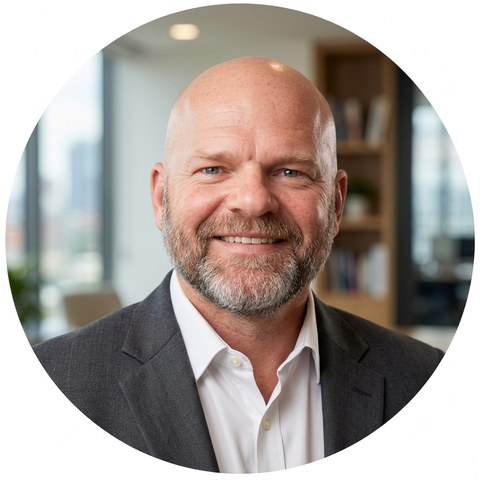

Richard Graham
Business Operations | Project Management | Boston
In the Office of the CIO at Fresenius Medical Care, I lead cross-functional IT projects from planning through delivery and develop shared standards for how teams manage milestones, dependencies and risks.
I've run my own business, built budgets for multimillion-dollar residential development projects and established the corporate sponsorship program for Columbia University's 250th anniversary.
Selected Results
Designed and directed an AI-assisted workflow that converted handwritten field notes into itemized estimates, renderings and defined scopes of work. In my experience, preparation fell from the better part of a day to under an hour, allowing proposals to go out the same day during active builds. I reviewed pricing and scope before approving client delivery.
Helped establish a new Boston research facility while coordinating site operations across facilities, IT, security, vendors and scientists. Forecast and tracked site expenses and supplies, supported budgeting and procurement, and coordinated the meetings and logistics around the launch.
Reconstructed property histories from deeds, chains of title, covenants and historical records. Prepared findings to support acquisition and development decisions, identifying constraints and matters requiring legal or other professional review.
Established the corporate sponsorship program for Columbia University's year-long 250th anniversary. Developed fundraising plans and multi-tier sponsorship strategies, cultivated corporate relationships and maintained a pipeline of more than 100 prospects.
As a Finance Associate on Hillary Rodham Clinton's 2000 Senate campaign, I ran two fundraisers from donor outreach through the events themselves. The Young Professionals event raised about $74,000 against a $50,000 goal. At Hofstra, the event with President Clinton raised more than $140,000 against a goal of about $100,000. Those figures are my recollection.
Capabilities
Microsoft 365: Outlook, Word, Excel, PowerPoint, Teams, SharePoint and OneDrive | Google Workspace, including domain administration | QuickBooks | Concur | Ariba | PeopleSoft | Kronos | Paychex | ADP | Taleo | DocuSign | Adobe Sign | Adobe Acrobat | Box | Dropbox | Notion | Zoom | Webex | AI-assisted research, document analysis and workflow design using ChatGPT, Claude, Codex, Copilot and Midpage
Selected Experience
Project Manager: IT Leadership Operations & Executive Coordination Lead. I manage delivery plans across IT teams. When timing or scope changes, I assess which commitments are affected and work with the teams to adjust the plan. I also own the content of operational reviews, including which risks and tradeoffs come forward for a decision.
Business Operations Manager (Independent Contractor). Managed business operations and project coordination across multimillion-dollar residential development, acquisitions, property operations and financial administration; the engagement with the principal was continuous from October 2018 through October 2026, with the later phase conducted through Blackwater Development LLC.
Built project budgets and forecasts with the principal, compared estimates with actual costs throughout construction and prepared funding draws after inspections confirmed completed work. Administered contracts and leases, coordinated Planning Board matters and researched property histories to inform acquisition decisions.
Owner (Sole Member). Owned and operated a business spanning real estate, solar-system sales and business consulting. Managed client agreements, vendors, QuickBooks bookkeeping, business administration and the company's Google Workspace domain and document systems.
For a Central Florida solar energy client, managed bookkeeping and payroll, customer financing applications, vendor accounts, supply orders and shipping administration. Prepared permit applications, trained staff and provided technology support across finance, service and administrative offices. Built and maintained the client's website and researched potential commercial relocation sites.
Sales Ambassador, promoted to Administrative Support Team Associate. Supported store HR and management-office operations in Taleo: candidate and new-hire records, offer and onboarding documentation, interview scheduling, and hiring reports.
Senior Administrative Assistant supporting the President of Oncology and Multiple Sclerosis and the Senior Vice President of Strategic Development during Sanofi's proposed acquisition of Genzyme. Coordinated diligence meetings, confidentiality-agreement tracking and document flow, and prepared executive briefing books and board materials. Prepared operational data for planning, budgets and vendor evaluation, and coordinated clinical-affiliation outreach with Harvard, UMass and Boston College. Contract engagement through Randstad.
Executive Assistant to the Senior Director of Molecular Oncology while helping establish a new research facility and laboratory. Coordinated site planning and operations across facilities, IT, AV, security, vendors and scientists. Forecast and tracked site expenses and supplies, supported budgeting and procurement, and managed executive calendars and international travel. Contract engagement through Kelly Services.
Director of Corporate Sponsorship for Columbia's 250th anniversary. Established the corporate development program from scratch, built a pipeline of more than 100 corporate prospects, and managed relationships through university events, symposia, and performances.
Director of Public Affairs and Communications for a newly elected senator. Directed media relations, maintained community and government relationships, conducted confidential issue research, and helped establish the office's public-facing operations. Completed Emily's List training in campaign planning, press secretary work, and fundraising.
Five roles of increasing responsibility across Hillary Clinton's 2000 Senate campaign, the transition into the new Senate office, and HillPAC. As Deputy Finance Director at HillPAC, managed the donor database and a portfolio of more than 1,000 prospects. In the newly established Senate office, worked with the Sergeant at Arms on IT systems, constituent databases, and official Senate mailings, helping build operational infrastructure at launch. Completed U.S. Secret Service advance training through the Office of the First Lady.
Director of Operations & Training. Supervised operations, hired and coached management and sales staff, and analyzed inventory and business development opportunities. Developed major-account strategies and managed relationships with corporate partners.
Research and Academic Background
My training in behavioral neuroscience shaped how I approach operational problems. I define the question, examine the evidence and test my assumptions before recommending a course of action.
Publications and Conference Presentations
My research appeared in Developmental Psychobiology in abstracts on maternal cues and ultrasonic vocalizations, maternal deprivation and odor exposure, and the effects of cocaine on memory for odor-milk pairings. I also co-authored The Developmental Psychobiology Laboratory Manual at Florida Atlantic University in 1996.
I contributed first-author and co-author presentations at meetings of the International Society for Developmental Psychobiology in San Diego, Washington, D.C., and New Orleans.
Research
My laboratory work covered behavioral neuroscience, maternal-infant interactions and serotonin receptor knockout models. It included behavioral testing, microscopy, histology and statistical analysis.
Teaching
Teaching Assistant, Experimental Psychology, Department of Psychology, Hunter College.
Teaching Assistant, Psychopharmacology, Department of Psychology, Florida Atlantic University.
Selected honors
Science Fellowship, CUNY Graduate Center. CUNY Tuition Scholarship. Outstanding Research in Psychobiology Award, Florida Atlantic University. Ellisa Pollock Memorial Scholarship for Academic Excellence. Charter member, Parliament of Owls Student Leader Honor Society.
Where the pattern started
Served as Senate President and on the Joint Budgetary Committee at Florida Atlantic University, Broward. The student government had an annual budget of approximately $5 million. Treasurer of the Psychology Association. Registration Coordinator for the International Society for Developmental Psychobiology annual meeting.
Beyond the Work
My background also includes graduate research, teaching experimental psychology and playing in a softball league in New York. Field research took me to the Chiricahua Mountains with the American Museum of Natural History. I even had a background role in an episode of Burn Notice.
Those experiences sit alongside the business and institutional work. Curiosity, careful observation and an interest in how people work together have stayed with me throughout.
My professional focus is business operations, project delivery and process improvement, especially in organizations building new capabilities or navigating change.